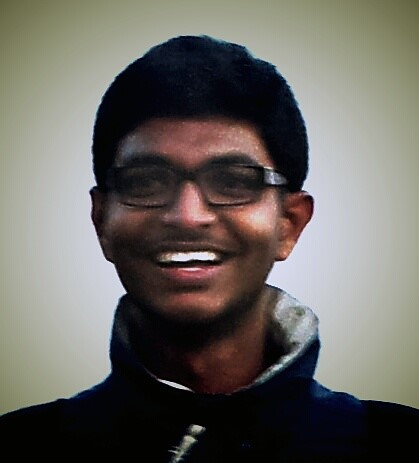
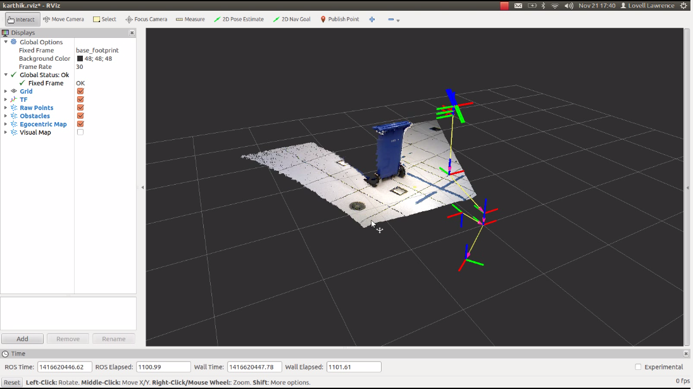

Home
Research Interests
* Current Research
Resume
People and travel
Projects
Creation Labs
Software & Tutorials
http://i4d.mit.edu/
Sponsors
|  |
ResearchI love to decipher and debug |
"I think that it's extraordinarily important that we in computer science keep fun in computing[...] What you know about computing other people will learn[...] The key to successful computing cannot be confined to your hands. What's in your hands, I think and hope, is intelligence: the ability to see the machine as more than when you were first led to it, that you can make it more." - Alan J. Perlis (1922-1990)
Current Research
| Collaborators | : | Laboratory of Computational Intelligence, UBC CanWheel, Canada. |
| Project Guides | : | Professor Ian M. Mitchell. |
| Team Members | : | Karthik Paga, Neil Traft, Pouria TalebiFard, Bikram Adhikari, Pooja Vishwanathan. |
| Institution | : | Institute for Computing, Information and Cognitive Sciences, University of British Columbia Vancouver, Canada. |
Abstract
Mobile robots (smart powered wheelchairs) for indoor navigation offer the possibility of enhanced mobility to a large and growing population (most notably older adults), and a key feature of such a chair is obstacle recognition and avoidance. Sensors are required to detect nearby obstacles; however, complete sensor coverage of the immediate neighborhood is challenging for reasons including financial, computational, aesthetic, user identity and sensor reliability. However, direct modeling and control of commercial wheelchairs is not possible because of proprietary internals and interfaces (standard CANBUS protocols). In this work we design a dynamic egocentric occupancy map which maintains information about local obstacles even when they are outside the field of view of the sensor system on the basis of a probabilistic mapping scheme, thus serving as a task specific module. The end result of the SLAM algorithm is an egocentric polar occupancy grid map published as a point cloud.
Keywords: information agglomeration matrix, recursive state estimation, obstacle detection, map estimation without full sensor coverage, bayes filter algorithm, markov assumption.
This project extends "A risk assessment infrastructure for powered wheelchair motion commands without full sensor coverage" work done by Pouria Talebifard et al., presented at IROS 2014, ChicagoValidation
The first image describes an indoor navigation scene, a static obstacle (blue recycling bin) in the mid way of the robot.
The 2nd image depicts (the map) the same scene as perceived by the robot. We can infer that the map generated is a close representation of the ground truth and the algorithm performs well at classifying the navigable space, obstacles and the occluded region.
The spectral color of each node in the map represents a quantitative value (Belief) which indicates the region around the node to be navigable. Higher the value, greater the likelihood for the region to be obstacle free.
VIBGYOR: violet-> not navigable...yellow-> equally likely...red-> navigable
work in progress....
For those interested in experimenting the Point cloud library over ROS for robot perception on topics such as, euclidean cluster extarction, object pose estimation, sementation (minicut etc.) etc., I have published:
The ROS tutorials for real time 3D point cloud processing
--Happy Robot(ifying)--
I will soon update the wiki and tutorial demonstrating a consolidated pipeline which can ease the simple tasks in robot perception (hobby projects) to identify the object and lablel each in the scene, segmentation, extract features or centroid estimation. These tutorials cover the modules which would form the robot perception tree. Individual explanations have been authored and well documented in their respective tutorials @ http://pointcloud.org. (comments included in respectice source scripts as well)
ROBOTS :)
Personal and Assistive Robot: Smart powered Wheelchair: Collaborative control (or) shared control policy
CanWheel
PR2 : Personal robot: Research robot
Charlie
Created 26 October 2014.
Last updated 16 December 2014.
Created and maintained by Karthik Paga.